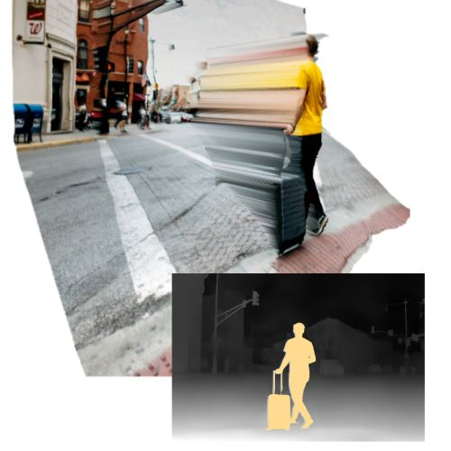
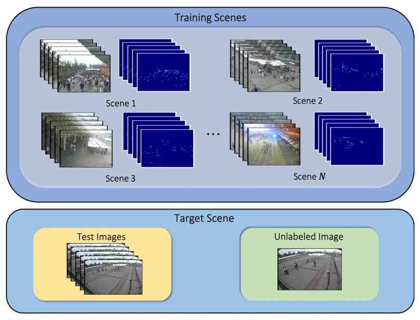
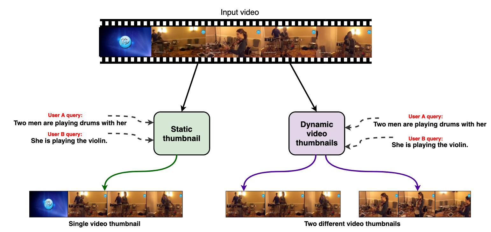
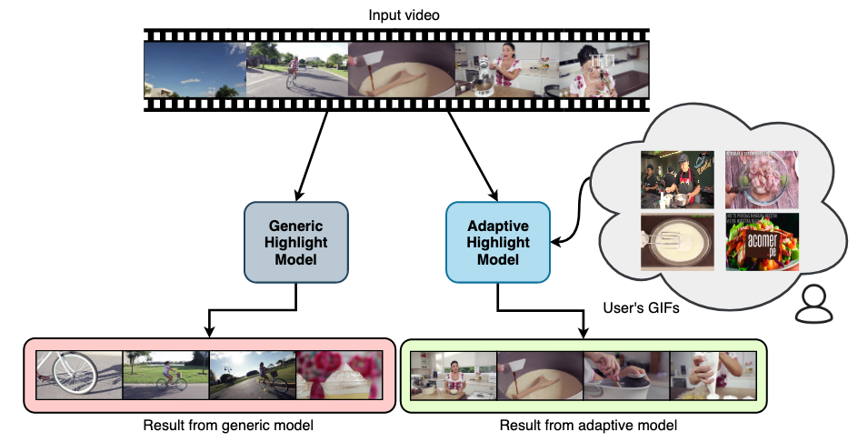
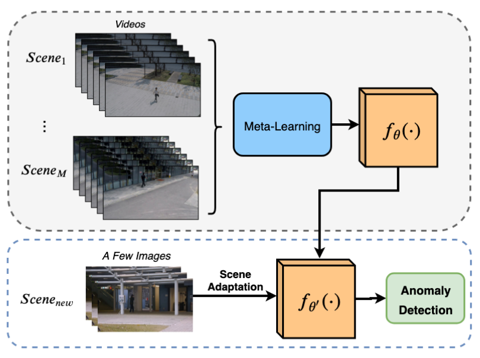
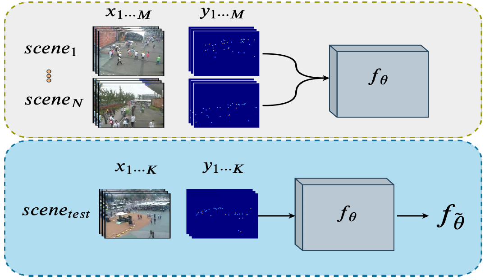
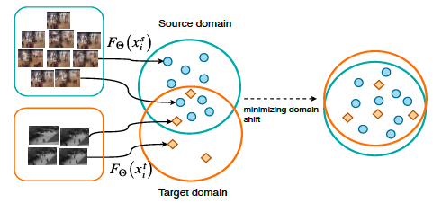
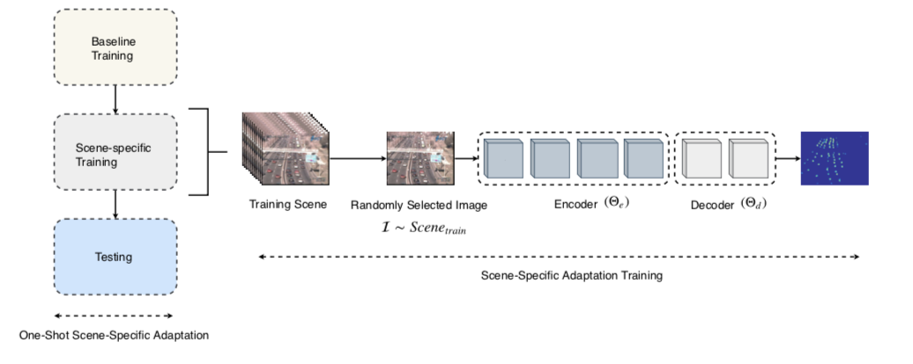
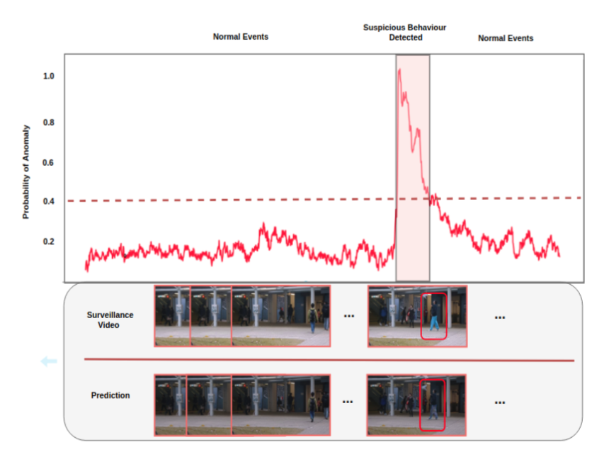
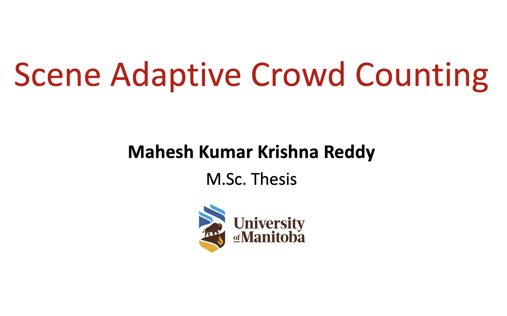

Mahesh Reddy
My research interests lie in computer vision and computational photography.I completed my MSc in Computing Science from Simon Fraser University, where I was advised by Prof. Yağız Aksoy. Previously, I was a research intern at Borealis AI and received my MSc in Computer Science from the University of Manitoba, where I was advised by Prof. Yang Wang. Before that, I received my B.E. in Information Science from VTU, India.
Email: maheshk2194 [at] gmail [dot] com
CV (last updated: dec 2022) // Google Scholar // GitHub // LinkedIn
News
- Dec 2022: Completed MSc thesis defence
- Aug 2022: 1 paper accepted to SIGGRAPH Posters 2022
- Feb 2021: 1 paper accepted to IEEE TMM
- Jul 2020: 1 paper accepted to BMVC 2020
- Jul 2020: 2 papers accepted to ECCV 2020
- May 2020: Summer intern at Borealis AI
Publications

Interactive Editing of Monocular Depth
Obumneme Stanley Dukor, S. Mahdi H. Miangoleh, Mahesh Kumar Krishna Reddy, Long Mai, and Yağız Aksoy
SIGGRAPH Posters, 2022
interactive editor // webpage // paper


Sentence Guided Temporal Modulation for Dynamic Video Thumbnail Generation
Mrigank Rochan, Mahesh Kumar Krishna Reddy and Yang Wang
British Machine Vision Conference (BMVC), 2020
paper




Domain Adaptation in Crowd Counting
Mohammad Hossain, Mahesh Kumar Krishna Reddy, Kevin Cannons, Zhan Xu and Yang Wang
Conference on Robot and Computer Vision (CRV), 2020
paper

One-Shot Scene-Specific Crowd Counting
Mohammad Hossain, Mahesh Kumar Krishna Reddy, Mehrdad Hosseinzadeh, Omit Chanda and Yang Wang
British Machine Vision Conference (BMVC), 2019
paper

Theses
